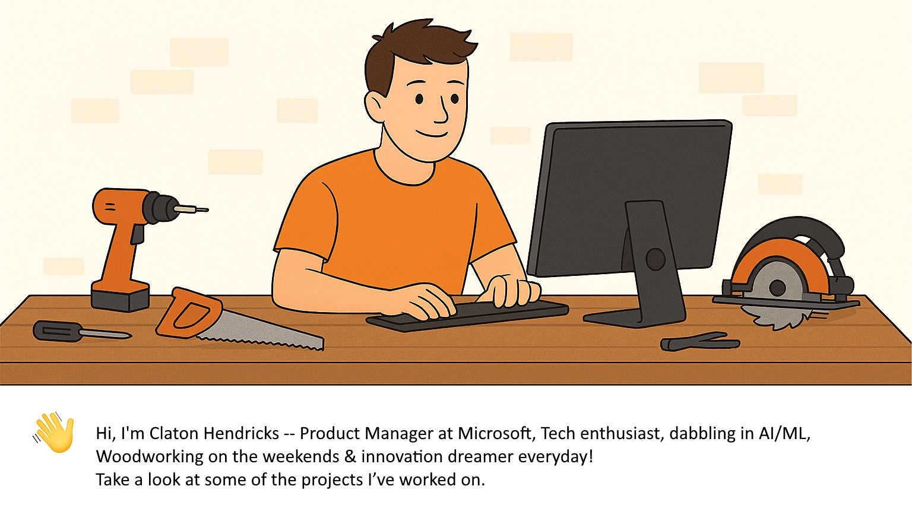

AIvsAI
An AI-powered debate platform where two AI models argue different perspectives on any topic.
👋 Hello, I'm
Product Manager @ Microsoft
I build intuitive developer experiences around performance tooling and contextual system-health insights — and when I'm away from the keyboard, I'm shaping wood into something real.

I'm a Product Manager at Microsoft, passionate about performance tooling, contextual system-health insights, and crafting intuitive developer experiences. I work closely with engineering teams on tools like WPA, WPR, and Performance.
I enjoy blending technology with craftsmanship. Whether I'm prototyping with AI or building something with woodworking tools, I love turning rough ideas into finished, useful things. Check out my Instagram for woodworking projects.
Things I'm building — mostly at the intersection of AI, Windows, and developer tools.
An AI-powered debate platform where two AI models argue different perspectives on any topic.
A Windows app that detects system crashes and uses AI (Phi-4) to explain and resolve crash events.
Right-click any folder in Windows Explorer to launch your AI coding CLI or any command in a terminal there.
A personal emotion-tracking app that captures your face and logs your emotional state over time.
A thin client tool to run MCP (Model Context Protocol) servers from the desktop.
A React + Vite dashboard that reviews any stock via the CAN SLIM framework — price action, fundamentals, news, and an AI scorecard.
A simple kids' flash-card game.
Off the screen, I work with wood under the name Dust & Smoke — furniture, small builds, and the occasional experiment.
Microsoft
Driving performance tooling and contextual system-health insights — shaping the developer experience across WPA, WPR, and Performance.
Always happy to talk product, performance, AI, or woodworking.